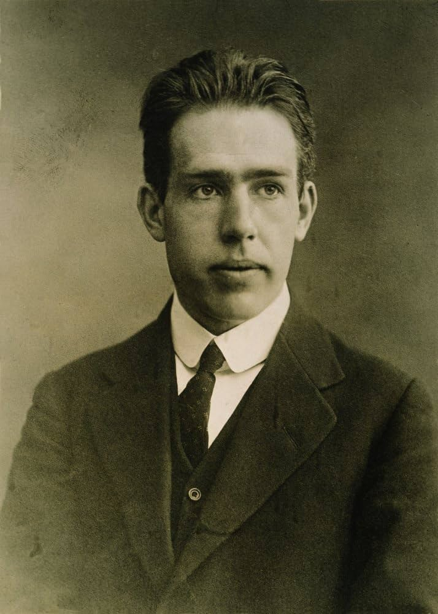
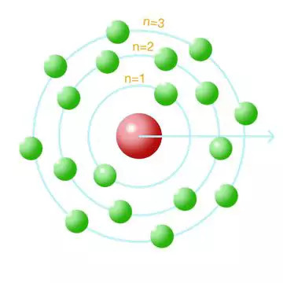
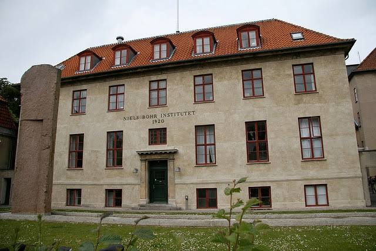

Entenda o modelo atômico de Bohr, suas fórmulas, o alcance real da teoria, suas limitações e o impacto das suas descobertas sem complicação!
ㅤ
Gabriel M e Amanda. ㅤN: 7,25
Conheça o cientista dinamarquês que transformou o modo como a humanidade entende a matéria e a física do mundo microscópico.
• Um Cientista Inspirado: Niels Bohr (1885–1962) nasceu na Dinamarca e cresceu em um ambiente cercado de ciência e debates intelectuais.
• Parceria de Peso: Trabalhou na Inglaterra com dois gigantes da física: J.J. Thomson (descobridor do elétron) e Ernest Rutherford (que descobriu o núcleo do átomo).

• O Modelo Planetário: Rutherford descobriu que o átomo parecia um mini sistema solar: um núcleo no centro com elétrons girando em volta.
• A Grande Crise: Pela física tradicional, tudo que gira emitindo energia deveria perder força e cair no centro. O átomo "colapsaria" em instantes. Mas a matéria é estável! Por que os elétrons não caíam?
Bohr juntou a física das partículas com a ideia de "pacotes de energia" (quanta) e resolveu o mistério da estabilidade dos átomos.
• Órbitas Especiais (Pistas Fixas): Bohr propôs que os elétrons não podem girar em qualquer lugar. Eles giram em pistas circulares bem definidas (camadas de energia).
• Regra de Ouro: Enquanto o elétron estiver na sua pista fixa, ele não perde energia nenhuma! Por isso o átomo não se destrói.

Pense nas camadas de energia como os degraus de uma escada:
Fórmula de Bohr para o tamanho da órbita: L = m · v · r = n · (h / 2π)
Fórmula do Salto de Energia: ΔE = E₂ - E₁ = h · f
• A Digital de Cada Elemento: Cada elemento químico tem camadas em distâncias diferentes. Quando aquecidos, seus elétrons dão saltos quânticos únicos.
Descubra em quais casos a teoria de Bohr funciona com perfeição e por que ela não é suficiente para a tabela periódica inteira.
• O Sucesso do Modelo: O modelo de Bohr foi criado especificamente e funciona perfeitamente para o **Átomo de Hidrogênio** (que possui apenas 1 elétron) e para íons de elétron único (como He⁺ ou Li²⁺).
• Por que NÃO serve para todos os átomos?
• A Evolução Necessária: As limitações do modelo de Bohr levaram os cientistas a desenvolver a **Mecânica Quântica Moderna**.
Descubra como Bohr ajudou a explicar a dualidade da matéria, a física das estrelas e a divisão do átomo (fissão nuclear).
• Conectando o Micro e o Macro: Bohr explicou que a física quântica (dos átomos) não anula a física comum de Newton (das coisas grandes).
• O Núcleo do Átomo (1936): Bohr percebeu que o centro do átomo (núcleo) não era um bloco duro. Ele propôs que o núcleo se comporta como uma gota de água muito densa.
• Como a Gota se Divide: Quando o núcleo absorve um nêutron, a "gota" vibra, estica e se divide em duas partes menores.
• A Quebra do Átomo: Junto com John Wheeler, Bohr explicou como a divisão (fissão) do elemento Urânio-235 libera uma quantidade enorme de energia.
• A Discórdia: Albert Einstein não gostava da ideia do mundo atômico funcionar por probabilidades ("Deus não joga dados com o universo").
• A Resposta de Bohr: Bohr defendeu firmemente a física quântica provando que no mundo microscópico as coisas funcionam sim de forma probabilística.
